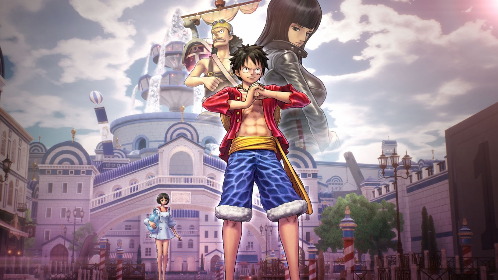

About One Piece
the One Piece anime television series was produced by Toei Animation, and directed by Hiroaki Miyamoto.
Monkey D. Luffy and his Friends
One piece s Characteristics
- Roronoa Zoro. The first to fall for Luffy's cheeky schemes was the wannabe World's Greatest Swordsman.
- Sanji. Sanji had everything. He had a job. He had a family. He had a life. Then Luffy ruined it. Sanji was a five-star chef at the floating restaurant.
- Luffy found Nami while she was traipsing around the East Blue, stealing from pirates in order to collect enough cash to buy back her village.
One Piece Groups
The world of One Piece is heavily influenced by the various pirate crews that inhabit it. From well-known crews like Whitebeard and Roger Pirates to more comedic ones like Buggy Pirates, we have seen a wide range of pirate crews in the anime. However, the Straw Hat Pirates have stood out from the beginning. Many have joined Luffy on his journey to becoming the Pirate King and we have seen the Straw Hat pirates grow significantly. As a group that has captivated our hearts, let’s learn about each Straw Hat pirate crew member’s background and get to know them better.Click on the links below toread more about them